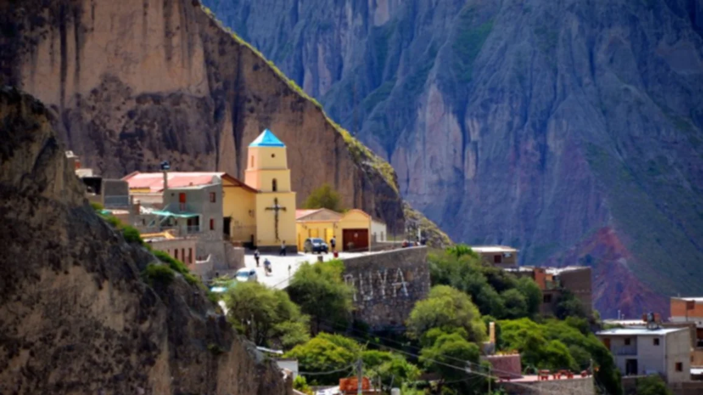

Los mejores Hostel´s de Iruya

El zorrito
This is a longer card with supporting text below as a natural lead-in to additional content. This content is a little bit longer.
Esperanza
This is a longer card with supporting text below as a natural lead-in to additional content. This content is a little bit longer.